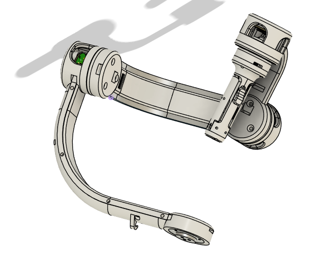
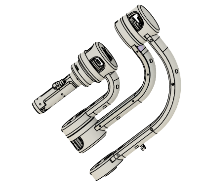
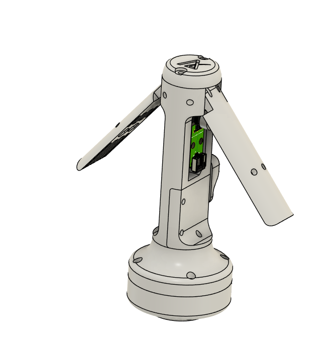
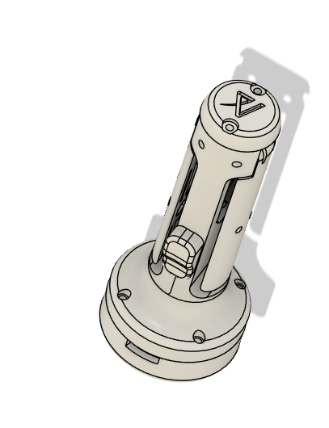

Robotics Systems Engineer Articulus Surgical, 2021 - 2023
Pulsar Robot Assisted Laparoscopic Surgery
Bengaluru, India
I joined Articulus Surgical at its inception as a founding team
member and one of its first contributors. The vision — building
an indigenous, sustainable and accessible robot-assisted surgery (RAS)
system to bring advanced medical technology within reach of more people —
served as our north star.
Articulus is a team of ambitious engineers from diverse backgrounds,
founded by Mr. Saurya Mishra, a post-graduate from IIT Kharagpur with
over a decade of experience in medical devices at companies such as
Philips Healthcare.
Pulsar Robot Assisted Laparoscopy
I began my journey at Articulus as a mechatronics engineer in November
2021, tasked with ideating and developing mechanisms for a 6-DOF
remote-centre robot based on a circular carriage-driver gantry.
Later, I took ownership of the end-to-end design and development of
the surgeon’s console, which involved designing joints and the structure
of a 7-DOF serial manipulator.
Because the console used passive joints, gravity compensation
(initially via counterbalance and later using springs) was a
significant design challenge. The mechanism I designed was described
by several doctors and investors as being “as smooth as a motor-driver
mechanism.” Alongside mechanical design, I led industrial design and
user experience efforts for all R&D projects.
Given the small team size, I also developed firmware on an ESP32 (ESP-IDF)
to read absolute joint encoders and convert readings to joint angles.
That data stream was transmitted over RS-232 to a PC, where it fed into
a forward kinematics model to compute end-effector parameters.
Later, I gained hands-on experience in PID controller design and tuning
for DC motors. I implemented the controllers on an RP2040 using the
PICO-SDK and deployed them to robot joint actuators.
Comet Handheld Motorised Laparoscopic
As a spin-off project, I designed a handheld motorised laparoscopic
instrument to control a 3-DOF end-effector. The capstan mechanism
concept was adapted from the Pulsar instrument. Surgeon arm
motion was encoded using a 3-DOF gimbal and translated into joint
angles for the instrument.




(top) 4DOF Gymbal of the 7DOF surgeon's console.
(bottom) Fingergrip of the surgeon’s console.